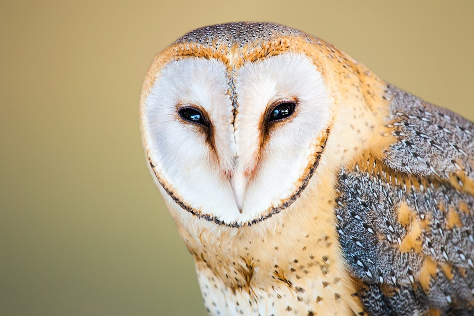

Random tekstiä pöllöistä
Pöllöt ovat kiehtovia ja salaperäisiä lintuja, jotka ovat tunnettuja terävistä aisteistaan ja erinomaisista metsästystaidoistaan. Ne ovat yöeläimiä, ja niiden suuret silmät ja pään pyörimisliike tekevät niistä helposti tunnistettavia. Pöllöjen sulava ja hiljainen lentotyyli auttaa niitä saalistamaan huomaamattomasti. Yleisimpiä saaliseläimiä ovat pienet nisäkkäät, kuten hiiret ja rotat, mutta jotkut pöllölajit voivat saalistaa myös muita lintuja tai jopa kaloja.

Pöllöillä on myös merkittävä rooli monissa kulttuureissa. Joissakin perinteissä pöllöt symboloivat viisautta ja tietoa, kun taas toisissa ne saatetaan nähdä pimeyden ja mysteerien edustajina. Esimerkiksi antiikin Kreikassa pöllö oli viisauden jumalatar Athenen symboli. Pöllöjä on monenlaisia, ja ne asuttavat lähes kaikkia maailman mantereita. Suomalaisista pöllölajeista tunnetuimpia ovat esimerkiksi lehtopöllö, huuhkaja ja sarvipöllö. Näillä linnuilla on erilaisia sopeutumia, jotka auttavat niitä selviytymään vaihtelevissa elinympäristöissä, olipa kyse sitten tiheistä metsistä tai avarista tundra-alueista.
